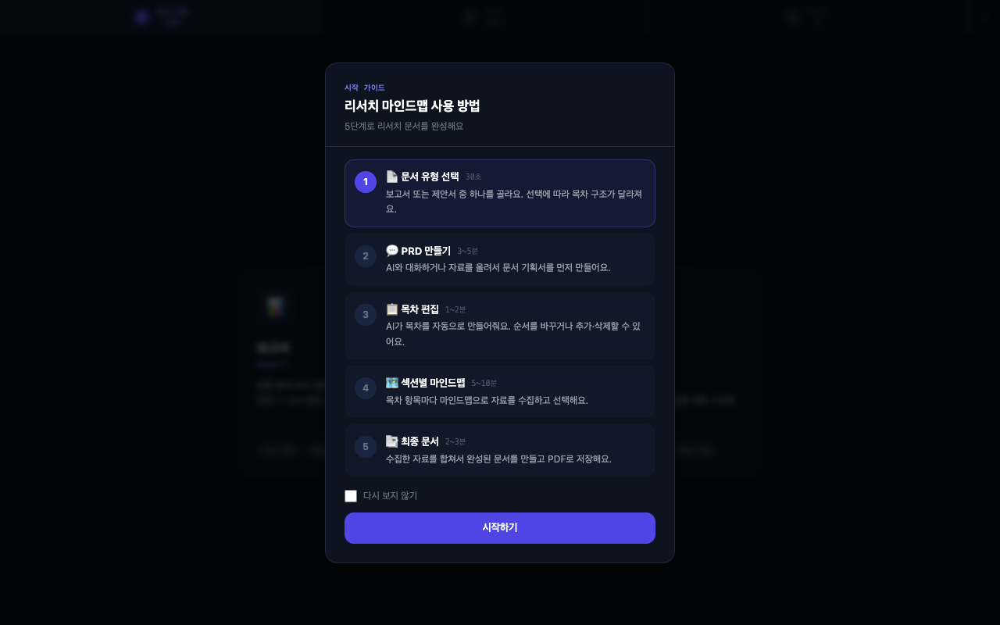
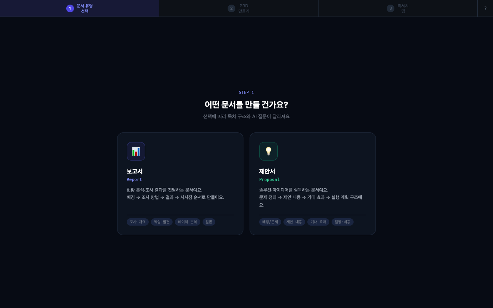
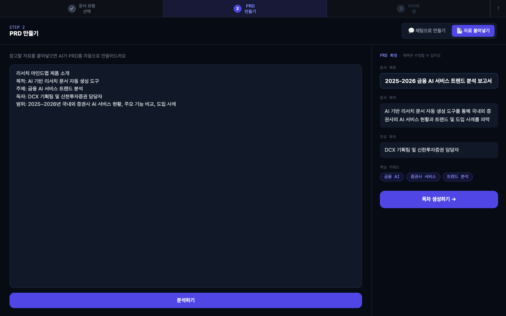
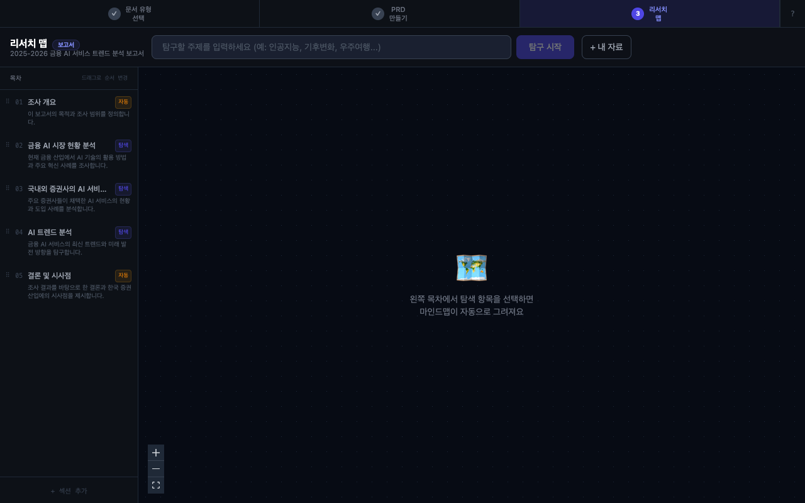
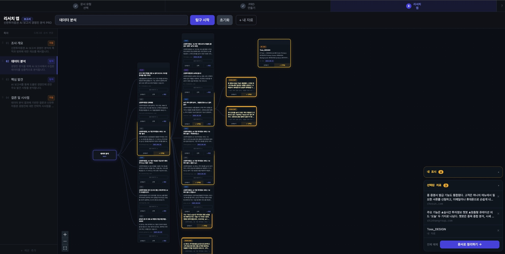

Product Introduction
문서 자동화 마인드맵
제품소개
김효주
DCX
2026-06-12
서비스 바로가기 ↗
목차
01
제품 개요 및 배경
02
서비스 흐름
03
화면 소개
— 온보딩 안내 화면
— 화면 1 · 문서 유형 선택
— 화면 2 · PRD 만들기
— 화면 3 · 목차 생성 & 편집
— 화면 4 · 섹션별 마인드맵
— 화면 5 · 최종 문서
04
문서 예시
01
제품 개요 및 배경
배경 · 현재 한계
—
문서 목적(보고서/제안서)에 따라 구성이 완전히 달라지지만 구분 없이 동일 방식으로 생성
—
주제만 입력하면 바로 마인드맵이 생성되어 문서 방향을 잡기 어려움
—
탐색 결과를 목차별로 나눠 정리하는 구조 없음
—
내가 가진 자료(파일)를 함께 참고할 수 없음
목적 · 기대 효과
—
보고서/제안서 목적에 맞는 문서 구조 자동 제안
—
채팅 또는 자료 업로드로 문서 기획(PRD) 먼저 확정
—
목차별로 마인드맵 탐색 → 내용 수집 → 최종 문서 합성
—
웹 검색 + 내 자료를 같이 참고해 풍부한 내용 생성
02
전체 서비스 흐름
Step 1
문서 유형 선택
보고서 또는 제안서 선택. 유형에 따라 이후 목차 구조·어조·슬라이드 형식 결정
Step 2
PRD 만들기
채팅으로 문서 목적·독자·범위를 대화로 확정하거나, 자료를 업로드해 AI가 자동 분석
Step 3
목차 편집
PRD 기반으로 목차 자동 생성. 순서 변경·항목 추가·삭제 후 확정
Step 4
섹션별 마인드맵
목차 항목 하나 = 마인드맵 하나. 웹 검색 + 내 자료 업로드로 내용 수집 → 선택
Step 5
최종 문서
전체 섹션 합성 → 인라인 편집 → PDF·PPTX 다운로드
03
화면 소개
04
온보딩 안내 화면

진입 시 표시 조건
—
첫 방문 또는 새 문서 시작 시 자동 표시
—
전체 5단계를 한눈에 볼 수 있는 스텝 가이드 형태
—
[다시 보지 않기]
체크 시 이후 진입에서 숨김. 상단
[?]
버튼으로 언제든 다시 볼 수 있음
안내 내용
—
각 단계 아이콘 + 단계명 + 한 줄 설명
—
현재 어느 단계인지 강조 표시
—
단계별 예상 소요 시간 표시
—
완료된 단계는 체크 표시로 진행 상황 확인 가능
표시 위치
—
첫 진입
— 화면 중앙 모달
—
작업 중
— 상단 고정 스텝 바 (접기 가능)
—
각 화면 상단
에 현재 단계 강조
05
화면 1 — 문서 유형 선택
1
문서 유형
선택
2
PRD
만들기
3
목차
편집
4
섹션별
마인드맵
5
최종
문서

보고서 (Report)
—
현황 분석·조사 결과를 전달하는 문서
—
구성: 배경 → 조사 방법 → 결과 → 시사점
—
어조: 객관적·서술적
—
기본 목차: 조사 개요 / 핵심 발견 / 데이터 분석 / 결론
제안서 (Proposal)
—
솔루션·아이디어를 설득하는 문서
—
구성: 문제 정의 → 제안 내용 → 기대 효과 → 실행 계획
—
어조: 설득적·액션 지향적
—
기본 목차: 배경/문제 / 제안 / 효과 / 일정·비용
선택 효과
— 유형 선택 시 Step 2(PRD 만들기)의 질문 항목과 Step 3(목차)의 기본 구성이 해당 유형에 맞게 자동 변경됨.
06
화면 2 — PRD 만들기
1
문서 유형
선택
2
PRD
만들기
3
목차
편집
4
섹션별
마인드맵
5
최종
문서

방식 A — 채팅 대화
—
AI가 문서 유형에 맞는 질문을 순서대로 질문
—
질문 예시 (보고서): "이 문서의 목적은 무엇인가요?" / "주요 독자는 누구인가요?" / "다루고 싶은 주제나 범위가 있나요?"
—
질문 예시 (제안서): "어떤 문제를 해결하고 싶나요?" / "제안 대상은 누구인가요?" / "기대하는 결과가 있나요?"
—
대화 완료 시 AI가 PRD 요약 카드 생성 후 확인 요청
방식 B — 자료 업로드
—
PDF·Word·텍스트·이미지 파일 업로드 (복수 가능)
—
AI가 업로드된 자료를 분석해 문서 목적·범위·주요 키워드 자동 추출
—
추출된 내용으로 PRD 초안 자동 생성
—
초안 확인 후 수정 가능. 수정은 채팅으로 추가 요청
PRD 확정 카드 구성
—
문서 제목
(수정 가능)
—
문서 목적
— 한 문장 요약
—
주요 독자
—
핵심 키워드
— 태그 형태
—
[목차 생성하기]
버튼 → Step 3 이동
07
화면 3 — 목차 생성 & 편집
1
문서 유형
선택
2
PRD
만들기
3
목차
편집
4
섹션별
마인드맵
5
최종
문서

목차 자동 생성
—
PRD 확정 내용 기반으로 AI가 목차 항목 자동 생성
—
문서 유형별 기본 구조 적용 (보고서/제안서 다름)
—
각 항목에 예상 내용 한 줄 설명 표시
—
화면 왼쪽 고정 패널로 표시
목차 편집 기능
—
순서 변경
— 드래그 앤 드롭으로 순서 조정
—
항목 추가
— [+ 항목 추가] 버튼으로 빈 항목 삽입
—
항목 삭제
— 각 항목 우측 [×] 버튼
—
이름 수정
— 항목명 클릭 → 인라인 편집
—
[목차 확정하기]
버튼 → Step 4 이동
목차 = 섹션 수
— 확정된 목차 항목 수만큼 Step 4에서 마인드맵이 생성됨. 목차는 Step 4 진행 중에도 좌측 패널에서 항상 확인 가능.
08
화면 4 — 섹션별 마인드맵
1
문서 유형
선택
2
PRD
만들기
3
목차
편집
4
섹션별
마인드맵
5
최종
문서

레이아웃 구성
—
좌측 패널
— 목차 목록. 현재 작업 중인 섹션 강조. 완료된 섹션 체크 표시
—
중앙 영역
— 현재 섹션의 마인드맵 (좌→우 나무가지형)
—
우측 패널
— 선택한 카드 상세 보기 + 선택 서랍
—
목차 항목 클릭 시 해당 섹션 마인드맵으로 전환
웹 검색 결과 카드
NEW
—
유형 배지: 뉴스·논문·블로그·유튜브
—
썸네일 이미지 · 제목 (최대 2줄)
—
AI 요약 2~3문장 · 출처명 · 날짜
—
개수 유동 (검색 결과 수 기준)
내 자료 업로드 카드
NEW
—
마인드맵 화면 내
[+ 내 자료 올리기]
버튼
—
PDF·Word·텍스트·이미지 파일 업로드 가능
—
AI가 분석해 카드 노드로 변환 후 마인드맵에 추가
—
카드에
"내 자료"
배지 표시로 구분
—
섹션마다 별도 업로드 가능
카드 동작 3종
—
[상세보기]
— 우측 패널에 전문 요약·원문 링크 표시
—
[선택]
— 우측 하단 서랍에 추가/해제
—
[+]
— 이 주제로 마인드맵 재확장
섹션 완료 처리
—
서랍에 카드 1개 이상 선택 시
[이 섹션 완료]
버튼 활성화
—
완료 시 좌측 목차에 체크 표시
—
모든 섹션 완료 시
[문서 생성하기]
버튼 활성화 → Step 5
—
일부 섹션만 완료해도 문서 생성 가능 (미완료 섹션은 빈 슬라이드로 처리)
09
화면 5 — 최종 문서
1
문서 유형
선택
2
PRD
만들기
3
목차
편집
4
섹션별
마인드맵
5
최종
문서
개발 예정
문서 자동 생성 · 인라인 편집 · PDF/PPTX 다운로드 기능은 현재 개발 중이에요.
슬라이드
내용
생성 방식
표지
문서 제목 · 문서 유형(보고서/제안서) · 날짜 · 작성자
자동
목차 슬라이드
확정된 목차 항목 전체 목록
자동
섹션별 슬라이드
각 목차 항목 = 1개 이상의 슬라이드. 선택 카드 내용 기반 AI 작성
AI
출처 목록
사용된 웹 검색 카드 및 내 자료 출처 자동 정리
자동
인라인 편집
—
텍스트 클릭 → contenteditable로 바로 수정
—
이미지 클릭 → 파일 업로드 또는 URL 교체
—
슬라이드별 AI 원본으로 초기화 버튼
다운로드
—
HTML 슬라이드 → PNG 캡처 (html2canvas)
—
PDF — jsPDF로 병합
—
PPTX — pptxgenjs 이미지 슬라이드
—
HTML·PDF·PPTX 완전 동일 비주얼 보장
04
문서 예시
TBD
개발 예정
리서치 마인드맵으로 생성된 실제 문서를
이 자리에서 바로 확인할 수 있게 될 예정이에요.